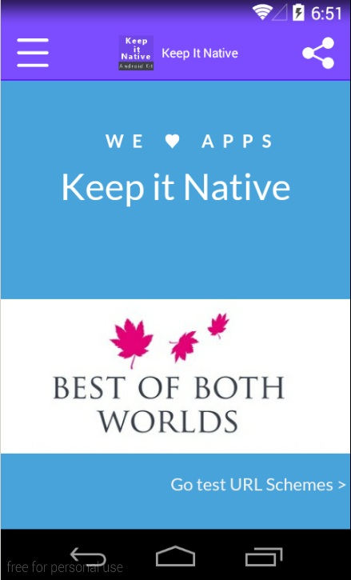

Keep It Native
Android Kit
- created: 11/16/2014
- latest update: 12/04/2014
- by: AntonioIrp
- email: antonio_irp@hotmail.com
Thank you for purchase Keep It Native Android Kit. If you have any questions that are beyond the scope of this help file, please contact with me email via or my envato user page. Thank you!.
Package Content
Keep It App Android Kit.zip includes:
- Keep It Native.zip: Includes a Keep It Native project to import using ADT or Android Studio.
- Read Me documentation
You will need check Android 5.0.0 Api 21 and add google play services in order to use translucency and adMob support respectively:
You can follow this guide:http://www.androidbegin.com/tutorial/integrating-new-google-admob-banner-interstitial-ads/
App Behaviour Configuration
Once you have imported the App project into your IDE you must open src/com/example/keepitapp/AppConfiguration.java and you wil see the configuration parameters:
Then we will see all the configurable parameters in order to run the application in the way we like:
- COLOR_THEME: Defines the color palette of the menus and buttons, in this kit includes 9 color palettes, you can modify this color by changing the : res/values/colors.xml file:
- PURPLE
- POWERED_PURPLE
- BLUE
- RED
- PINK
- GREEN
- ORANGE
- SEA_SUNSET
- STORK
- APP_THEME: Defines the style of the status bar and navigation bar, for KitKat you can use translucency, it suports 6 differents themes, older versions than KitKat doesn`t support translucency, in order to see the effect of this themes there is a chapter with screenshots:
- FullscreenWithOpaqueNavigation
- FullscreenWithTranslucentNavigation
- StatusbarAndNavigationTranslucent
- StatusbartAndNavigationOpaque
- StatusbarOpaqueAndNavigationTranslucent
- StatusbarTranslucentAndNavigationOpaque
- SPLASH_SCREEN_TIMER: If you don`t want splash screen before your app then set to 0.0f, i.e.if you want a 1,5 seconds splash screen then set to 1.5f.
- DEFAULT_PAGE: Defines the first web page of your web app that will be shown. You must copy your web app folder to assets folder and change the route to the index page.
- SET_FAVICON: The favicon image will be shown in the top bar if true, the favicon will be removed if false.
- SET_TITLES: The web page title will be shown in the top bar if true, the titles will be removed if false.
- OPEN_IN_EXTERNAL_WINDOW: the http/https links will be opened in the app if false instead a web browser. If true all http/https will be opened in a external window.
- HIDE_ALL_STUFF: Hides the top bar if true but you cannot use menu nor share menu. This option will help you if you want to show your web app in total fullscreen mode and you have a menu system already.
In order to configure Ad Mob you will need to edit: src/com/example/keepitapp/AppConfiguration.java
- AD_MOB: Set a banner if true, if false the ad mob is disabled and no banner will be shown.
- AD_UNIT_ID: You must configure your ad unit identifier.
Keep It App let you share links and snapshots.
- CAPTURE_ONLY_VISIBLE_PART: the captured snapshot will be the visible part of screen (visible part of WebView) if true, if false whole web page will be captured.
- CAPTURED_IMAGE_QUALITY: if 100 the snapshot will have all quality available. 100 is the maximum limit.
- SHARE_IMAGE_ONLY: if false, when sharing a image a web page link will be attached too. If true when sharing a image only the image will be attached.
App Launcher Icon
The app icon is set in drawable folder in ic_launcher.png image file. You only need to rename and replace by your own logo to ic_launcher.
About Button Configuration
Keep It Native includes an "About" screen like others native app. You can configure twitter, facebook, email and website link and app version info.
You can enable/disable the "about" button and its links, in AppConfiguration.java file:
All buttons opens a Dialog if there is more than one native app that can handle the link.
About Screen includes an HTML 5 responsive user guide template ready to change the images, colors and text you want, the user guide html code can be found in userguide assests folder. The user guide can be disabled by changing ENABLE_USER_GUIDE to false;
Color Theme
You can select the color palette of your application in AppConfiguration.java file. But you can customize the color palette too by your own.
You must open /res/values/arrays.xml file and see the arrays of color themes like this:
This color palette named "Stork" includes the HEX color code for all elements on screen like action bar, buttons colors or the share menu.
The 3 first items are mandatory and shouldn`t be removed or rearranged, but you can change the color HEX code.
The elements like: stork_button_1, stork_button_2 ... etc define the color of the button. You will need to set at least one item for each button you have configured (See Buttons & Links Configuration Section). Doesn`t matter the attribute name is repeated.
In the figure below exists 4 buttons and Stork theme array has 4 items with its HEX color codes.
Parse Notifications
Keep It Native support native notifications using Parse service. There are 2 notifications modes:
- Simple text Messages
- Link notification
Simple Text Messages
You can send a simple text push notification simply using the "Plain Text" mode in Parse:
Link Notification
You can send a notification which consist in a link, this notification will open your app and it will load a custom link. You only need to switch to "JSON" mode in Parse, and set the following text:
{"link": "http://google.com"}
This notification will open your app and will show google.com in your app. You can use local link too like file://android_asset/yourFolder/resource.html
Configure Parse
You only will need to configure in AppConfiguration.java your PARSE_APPLICATION_ID and PARSE_CLIENT_KEY provided by Parse.

Configure Notification Icons
You can change the notification icon by replacing ic_notification.png image in drawable-hdp, drawable-mdpi, drawable-xhdpi and drawable-xxhdpi folders. You only need to rename into ic_notification and replace by your own image files.
Rate My app
Keep It Native includes a rate my app dialog. You can enable/disable it, and configure your Google Play app link.
You'll need to configure DISABLE_RATE_MY_APP and MY_APP_GOOGLE_PLAY_LINK in AppConfiguration.java file.
App Themes
FullscreenWithOpaqueNavigation
FullscreenWithTranslucentNavigation
StatusbarAndNavigationTranslucent
StatusbarAndNavigationOpaque
StatusbarOpaqueAndNavigationTranslucent
StatusbarTranslucentAndNavigationOpaque

URL Schemes
Keep It Native is ready to use URL Schemes, each time the user pick a link with a url scheme the user will be prompted with a "complete using..." menu.
The schemes availables are:
- tel:
- sms:
- smsto:
- mms:
- mmsto:
- geo
- http://maps.google
- https://maps.google
- market:
URL Schemes will open a dialog to let the user open the link with the native app the want.
Splash Screen Configuration
If you want to use Splash Screen in your App you can modify the splash image by replacing the splash_screen.png image file in /drawable folder, you only need to rename your own image to splash_screen.